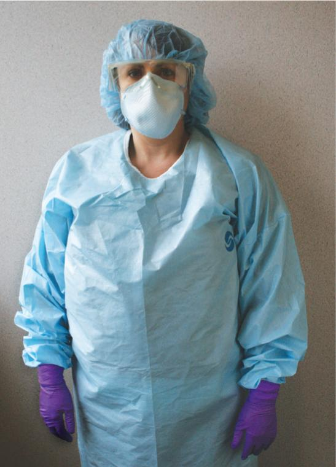
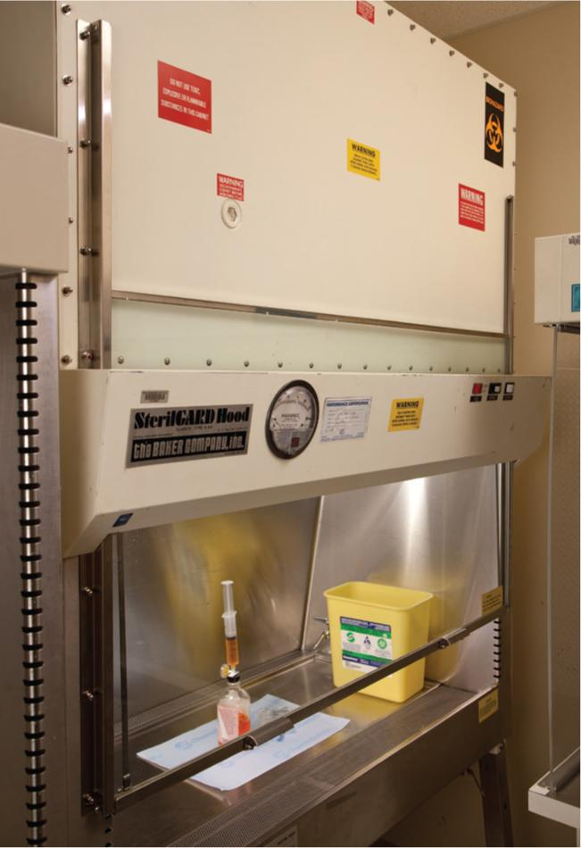
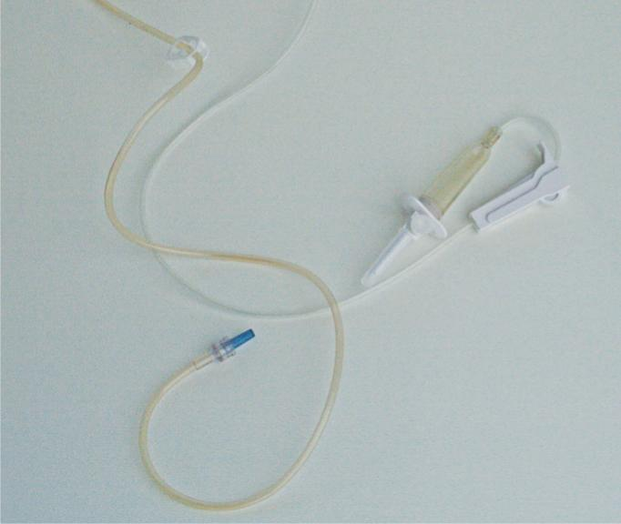

PART 2: TRAINING
16.14 Preview the Procedural Lab
Now that you, as a sterile compounding student, have a basic understanding of the components and critical sites of the supply items used in chemotherapy preparations, you have the opportunity to preview—and subsequently perform—the sterile compounding of a chemotherapy CSP using aseptic technique.
First, read the Preview the Procedural Lab section. Then carefully read each step of the Procedural Lab section. Next, reinforce your understanding by watching the demonstration video. Once in the lab, your instructor will demonstrate the procedure, and then you will perform the procedure by following the steps in the Procedural Lab section. After sufficient practice, you will complete the procedural lab for competency assessment that will be observed by your instructor.
Note: This procedural lab requires the use of a BSC. For pharmacies that have a CACI, sterile compounding personnel should consult the Instruction Guide provided by the CACI’s manufacturer or their facility’s SOPs to determine which procedures may need to be adjusted.
Anteroom Preparatory Procedures
For the purposes of this lab, you will prepare for the sterile compounding process in the anteroom. In practice, you may perform some of these preparatory procedures before entering the anteroom, depending on a facility’s SOPs. The anteroom provides a transition space for implementing the procedures discussed in Chapters 5–8 of this textbook, including:
- verifying the CSP label against the chemotherapy medication order
- performing pharmacy calculations to determine type, size, and number of supply items needed
- gathering and staging supplies
- performing hand hygiene
- donning appropriate PPE.
Verifying the CSP Label
The first step in the preparation of a chemotherapy CSP is verification of the CSP label. Although in some facilities this step is performed by a pharmacist, it is considered best practice to have both a pharmacist and a sterile compounding technician perform this task. Implementing this double-check system helps to reduce the likelihood of a medication error.
With that in mind, you should compare the medication order to the CSP label to verify that all of the information on the CSP label matches the chemotherapy medication order exactly. Then read the CSP label to determine the desired dose of the chemotherapy medication. Finally, read the CSP label to determine the correct type of IV base solution.
Performing Pharmacy Calculations
To confirm that the chemotherapy medication dosage on the CSP label was calculated properly and was based on the chemotherapy medication order for the drug (mg/m²) and the patient’s BSA, you must perform a series of calculations. Your calculations determine the volume of drug that must be withdrawn from the reconstituted vial to prepare the desired CSP dose.
Gathering and Staging Supplies
After performing the necessary calculations, place the chemotherapy medication order and the CSP label into the appropriate-sized plastic bags. Then gather all necessary compounding supplies and obtain a transport vehicle—such as a stainless-steel cart, basket, or tray—to facilitate an easy transfer of supplies into and out of the HD buffer room.
With the supplies and transport vehicle at hand, wipe down the exterior surface of every supply item, as well as the transport vehicle, using low-lint wipers saturated with a sporicidal agent, a disinfectant registered with the EPA, or sterile 70% IPA. Personnel must ensure that these agents dwell on the surface of the item for the labeled contact time. If they use sterile 70% IPA for this procedure, they must allow the item to dry thoroughly. This procedure must be performed before placing items into a pass-through (unless package integrity would be damaged) or bringing items into the clean side of the anteroom.
Many supply items are provided by their manufacturers as individually wrapped items in a protective outer covering, sometimes called a dust cover. To disinfect these supply items, wipe down the entire exterior surface or dust cover of each supply item. Be sure to also wipe down the exterior surfaces of the plastic bags containing the medication order and CSP label. After wiping the exterior surface of each item, place the item into the transport vehicle. Discard used wipers into a waste container.
Donning PPE
Now that you have assembled and wiped the exterior surfaces of necessary supplies, you must don PPE, a requirement for working in the HD buffer room. Before donning PPE, ensure that you are wearing close-toed shoes and either a clean scrub uniform or other approved, lightweight, nonshedding clothing and that you have removed cosmetics, jewelry, and other items prohibited in the sterile compounding area. Then don two pair of shoe covers; a head cover and, if necessary, a facial hair cover; a face mask; goggles; a gown; and a chemotherapy gown. Apply an alcohol-based hand rub to all surfaces of your hands and fingers and allow your hands to dry before donning two pairs of sterile chemotherapy gloves. (Note: This procedure may also be performed in the HD buffer room; refer to facility SOPs for specific instructions.)

Due to time constraints, you will not perform hand-washing procedures during this procedural lab. Keep in mind that, in sterile compounding practice, handwashing is mandatory and must be performed prior to donning sterile chemotherapy gloves. If you are performing this procedural lab in a working HD buffer room, you must perform all hand hygiene and garbing procedures before entering the HD buffer room. (For additional assistance on the procedure for donning basic garb, refer to Chapter 8 of this textbook.)
HD Buffer Room Preparatory Procedures
When preparing chemotherapy CSPs for patient administration, you must diligently follow HD buffer room preparatory procedures. These procedures are discussed in Chapters 8 and 9, with additional chemotherapy-specific procedures discussed throughout this chapter. Once the preparatory steps have been completed, you may begin chemotherapy compounding procedures.
Upon entering the HD buffer room, place the transport basket onto a clean shelf, table, or countertop. If the transport vehicle used is a cart, wheel it so that it is positioned away from the BSC’s prefilter. If not performed previously, sanitize your hands with an alcohol-based hand rub, allow your hands to dry thoroughly, and then don two pairs of sterile chemotherapy gloves. Position the cuffs of the first pair of sterile chemotherapy gloves on the forearms and under the wrist cuffs of the chemotherapy gown. Don a second pair of sterile chemotherapy gloves by pulling them over the first pair. The cuffs of the outer gloves should be positioned over the wrist cuffs of the chemotherapy gown. Then wipe the outer pair of sterile chemotherapy gloves with sterile 70% IPA and allow your gloved hands to dry thoroughly.
Due to time constraints, you will not deactivate, decontaminate, clean, and disinfect the BSC during this procedural lab. Keep in mind that, in sterile compounding practice, these procedures are mandatory and must be performed prior to sterile compounding and at intervals prescribed by USP <797> and USP <800>.
Arranging and Preparing Supplies in the BSC
Once the BSC has been deactivated, decontaminated, cleaned, and disinfected, you must transfer the disinfected supplies from the transport vehicle or clean countertop to certain areas within the BSC. Place the small chemotherapy sharps container toward the back of the cabinet’s work surface and off to the side. This positioning allows for uninterrupted airflow during sterile compounding procedures within the cabinet. (Note: For this procedural lab, you will not use a second chemotherapy sharps container, which is typically positioned on the floor next to the BSC; in practice, refer to your facility’s SOPs for procedures related to this supply item.)
Next, center the plastic-backed preparation mat onto the work surface of the BSC. Then place the IV tubing, drug vial, sterile 70% IPA swabs, syringe, needle, chemotherapy dispensing pin, and a few sterile, low-lint wipers on the work surface, opposite from the sharps container. Remove the outer dust cover from the IV bag and discard the cover into the chemotherapy sharps container. Then place the IV bag onto the plastic-backed preparation mat. Keep the other supply items temporarily in the transport vehicle.
Chemotherapy CSP Compounding Procedure
With the chemotherapy sharps container placed to one side of the interior work surface of the BSC, the small compounding items positioned along the other side of the interior work surface of the BSC, and the IV bag centered on the plastic-backed preparation mat on the BSC work surface, you are ready to begin the compounding procedure. During the procedure, move supply items from along the side of the interior work surface onto the plastic-backed preparation mat as they are needed.

Priming the IV tubing
Remove the outer wrapper from the IV tubing, and place the wrapper into the small chemotherapy sharps container in the BSC. Wipe your sterile gloves with sterile 70% IPA and allow your gloved hands to dry thoroughly. Close the roll clamp on the IV tubing, and temporarily place the IV tubing onto the work surface. Next, remove the plastic cap from the tubing needle adapter and place the plastic cap into the small chemotherapy sharps container. Remove the outer wrapper from a regular needle and aseptically attach the capped needle to the adapter. Place the needle wrapper into the small chemotherapy sharps container. Remove the pull tag to expose the IV bag tubing port and dispose of the removed tag into the small chemotherapy sharps container. Then remove the cap from the tubing spike and place it into the small chemotherapy sharps container as well. Aseptically insert the tubing spike into the IV bag port. Take care to avoid touch contamination and shadowing when inserting the spike into the port. Pinch and release the tubing drip chamber once or twice to draw a small amount of fluid from the IV bag into the drip chamber.
Open a sterile 70% IPA swab, remove the swab, and place it onto the plastic-backed preparation mat. Place a folded low-lint wiper on the plastic-backed preparation mat. Dispose of the wrapper from the IPA swab into the small chemotherapy sharps container. Remove the needle cap from the needle adapter on the IV tubing, and place the cap onto the IPA swab. Without setting down, touching, or shadowing the needle and attached tubing adapter, begin the flow of IV fluid by slightly rolling up the clamp. Allow a few drops of IV fluid to drip onto the low-lint wiper placed on the plastic-backed preparation mat. Roll the tubing clamp shut to stop the flow of fluid. Recap the needle. Temporarily place the IV bag with attached, filled tubing and recapped needle onto the work surface within the BSC.

Preparing the Chemotherapy Vial
Remove the flip-top cap from the drug vial and discard the cap into the chemotherapy sharps container. Then remove a new, sterile 70% IPA swab from its wrapper and discard the wrapper into the chemotherapy sharps container. Wipe the vial stopper with the sterile 70% IPA swab and place the swab on the work surface. Remove the outer wrapper from the chemotherapy dispensing pin and dispose of the outer wrapper into the small chemotherapy sharps container. Remove the cap from the chemotherapy dispensing pin spike. Place the cap into the small chemotherapy sharps container. Without touching or shadowing the spike, pick up the drug vial and turn it slightly sideways; then insert the spike of the chemotherapy dispensing pin into the vial stopper. Using a twisting motion, return the vial (with attached dispensing pin) to its original, upright position on the work surface.
Next, remove the syringe from its outer wrapper and then dispose of the wrapper into the small chemotherapy sharps container. If applicable, remove the syringe tip cap and then place the cap into the small chemotherapy sharps container. Without setting the syringe down, remove the Luer-lock syringe adapter cap on the chemotherapy dispensing pin and place it onto the IPA swab. Without setting down the syringe and without touching or shadowing the syringe tip or chemotherapy dispensing pin adapter, turn the vial (with attached, uncapped syringe adapter on the dispensing pin) slightly sideways and attach the syringe tip to the Luer-lock adapter (located on top of the chemotherapy dispensing pin).
Carefully invert the vial (with chemotherapy dispensing pin and syringe still attached) so that the syringe is below the vial. Pull down on the flat knob of the plunger to draw fluid from the vial into the syringe. Gently tap the syringe to force air bubbles toward the tip of the syringe. When all bubbles have risen to the syringe tip, gently push up on the flat knob of the plunger to expel remaining air and unnecessary fluid back into the vial.
Once the proper amount of fluid has been withdrawn from the vial through the chemotherapy dispensing pin and into the syringe, return the syringe (attached to the dispensing pin, which is attached to the vial) to the original starting position with the vial resting upright on the plastic-backed preparation mat. Turn the chemotherapy dispensing pin-and-syringe unit slightly sideways and then remove the syringe from the dispensing pin by twisting it off the Luer-lock adapter. Remove the outer wrapper from a regular needle and aseptically attach the capped needle to the filled syringe and temporarily place the filled syringe with attached, capped regular needle onto the plastic-backed preparation mat. Recap the Luer-lock adapter (on top of the dispensing pin) with the cap you earlier placed onto the IPA swab.
Arrange the drug vial with attached, filled chemotherapy dispensing pin next to the filled syringe on the plastic-backed preparation mat. Place the IV bag (with filled tubing) next to the filled syringe on the plastic-backed preparation mat within the BSC. Ask for a verification check by a pharmacist or your instructor.
Preparing the Chemotherapy CSP
After the verification check has been completed, open a new, sterile 70% IPA swab, remove the swab, and place the wrapper into the small chemotherapy sharps container. Use the swab to wipe the injection port of the IV bag and then place the used IPA swab under the injection port to absorb any medication that may drip from the port.
Carefully remove the needle cap from the filled needle-and-syringe unit. Dispose of the cap into the small chemotherapy sharps container. Then insert the needle into the injection port of the IV bag, taking care not to puncture the sidewall of the port. Push up on the flat knob of the plunger to inject the medication from the syringe into the IV bag. Once all of the medication has been injected into the IV bag, grasp the barrel of the syringe and remove the needle-and-syringe unit from the IV bag. Place the empty needle-and-syringe unit into the small chemotherapy sharps container.
Cleaning and Compounding Completion Procedures
Upon completion of the chemotherapy sterile compounding procedures, dispose of the used vial with attached chemotherapy dispensing pin, caps, IPA swabs, used wipers, plastic-backed preparation mat, and any remaining supply items into the small chemotherapy sharps container. Gently squeeze the CSP to check the bag for leakage, and then inspect the solution for precipitate matter and other signs of incompatibility. If there is no evidence of these issues, cover the IV bag injection port with a tamper-evident, sterile, adhesive seal. The seal prevents exposure to minute drops of fluid that may leak from the CSP injection port due to needle punctures made during compounding.
Saturate a sterile, low-lint wiper with sterile 70% IPA from the pour bottle, and wipe the entire exterior surface of the CSP and the entire attached-and-filled tubing. This wiping action helps to remove any hazardous drug that may have accumulated on the exterior surfaces of these supply items during sterile compounding procedures.
Affix the CSP label and a chemotherapy auxiliary warning label to the prepared CSP. Then place the labeled CSP with attached-and-filled tubing into a plastic transport bag and seal the bag. Affix a chemotherapy warning label on the plastic transport bag and place the bag with labeled CSP into the transport vehicle.
Remove your outer chemotherapy gloves by pulling them down from the wrist, turning each glove inside out as it is pulled off. Place the used gloves into the small chemotherapy sharps container. Remove the chemotherapy gown by pulling it down off of the shoulders, turning the gown inside out as it is removed. Then remove the outer shoe covers. Place the used gown and outer shoe covers into the large chemotherapy waste container before leaving the HD buffer room.
Lightly saturate a sterile, low-lint wiper with sterile 70% IPA from the pour bottle. Then, using the saturated wiper, wipe the exterior surfaces of other potentially contaminated, reusable supply items, such as extra supplies, that must be returned to the anteroom.
Return the transport vehicle containing the labeled chemotherapy CSP to the anteroom. Remove your remaining PPE in the order described in Chapter 8 of this textbook. Dispose of the removed PPE (including the inner chemotherapy gloves) into the anteroom chemotherapy sharps container. Remove the chemotherapy goggles and clean them using a sterile, low-lint wiper and an appropriate agent before disinfecting them with sterile 70% IPA. Record the BUD and your initials on the CSP label. Ask for a final verification check from a pharmacist or your instructor and have the individual initial the CSP label.